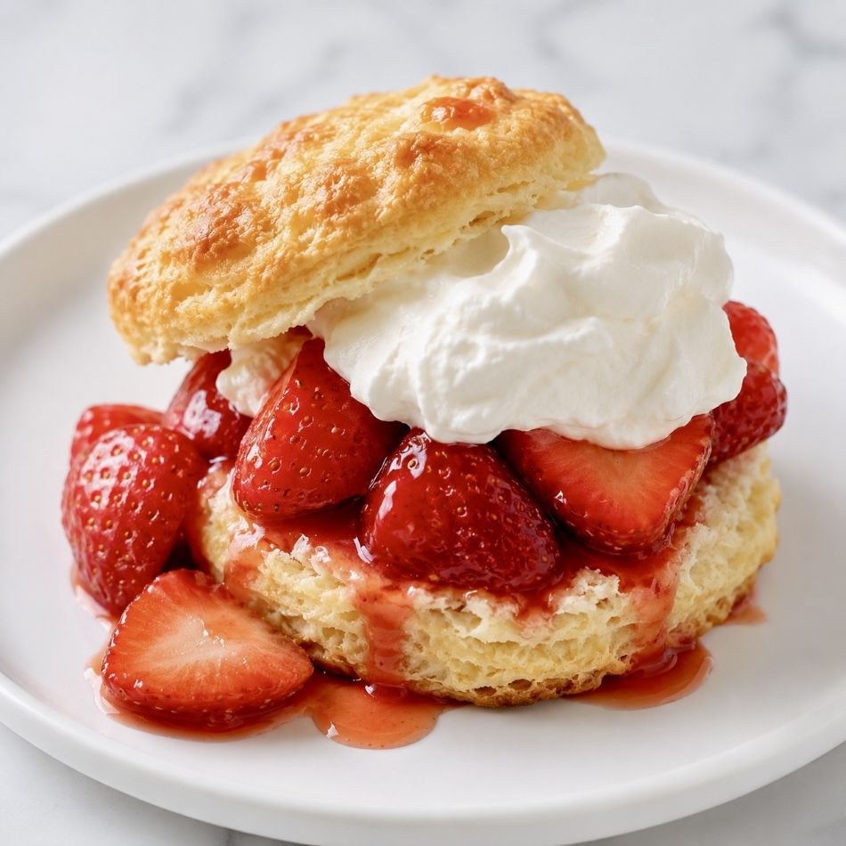

This dessert came out of a simple request: Rick wanted strawberry shortcake for his birthday dinner. It felt like the perfect opportunity to return to the basics and assemble something truly fresh.
I started with the foundation—the biscuits. I made them from scratch using Italian 00 flour I had in the pantry and store-bought buttermilk, focusing on keeping everything cold to ensure that perfect, tender rise.

For the fruit, we picked up the freshest strawberries we could find. After cleaning them, I halved or quartered them depending on their size, then macerated them with just a small amount of sugar and a splash of lime juice. It didn't take much—just enough to coax out their juices and create a light, bright syrup that complemented the richness of the biscuits.
To finish, I made fresh whipped cream using heavy whipping cream in my KitchenAid stand mixer. The trick, as always, was freezing both the bowl and the whisk attachment beforehand to keep the temperature stable. Everything came together for a wonderful birthday dessert; you could really taste the quality of the ingredients, and because it wasn't overly sweet, it felt like the perfect, light end to a celebratory meal.
Ready to make it?
→ View the Buttermilk Biscuit Recipe